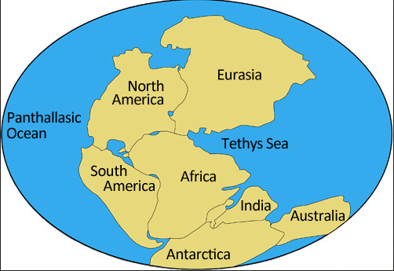

Paleozoyik Zaman'ın son periyodu olan Permiyen, yerküre tarihinde hem karasal yaşamın büyük bir dönüşüm geçirdiği hem de tarihin gördüğü en şiddetli kitlesel yok oluşla sarsıldığı bir dönemdir. İsmini Rusya'daki Perm bölgesinden alan bu evre, süper kıta Pangea'nın birleşmesiyle gezegenin çehresini sonsuza dek değiştirmiştir.
Pangea'nın Şekillenmesi ve Büyük Ölüm
• Süper Kıta Pangea: Permiyen boyunca yerkürenin ana kara kütleleri birleşerek ekvatoru çevreleyen devasa süper kıta Pangea'yı oluşturmuştur. Bu devasa kara kütlesini ise Panthalassa adı verilen uçsuz bucaksız bir dünya okyanusu çevrelemekteydi.
• Sürüngenlerin Yükselişi: Karasal yaşamda sürüngenlerin atası olan sinapsitler ve gelişmiş omurgalı grupları evrimleşerek ekosistemlerde baskın hale gelmiştir.
• İklimsel Salınımlar: Dönemin başlarında devam eden buzul çağı etkileri, yerini zamanla artan kuraklaşma eğilimine ve Pangea'nın iç kesimlerinde belirginleşen iklim dalgalanmalarına bırakmıştır.
• Deniz Seviyesi Değişimleri: Erken Permiyen'de günümüzden yüksek olan deniz seviyeleri, dönemin sonuna doğru tüm Paleozoyik Zaman'ın en düşük seviyelerine inmiştir.
• Büyük Yok Oluş: Dönem, deniz canlılarının %90-95'inin, kara canlılarının ise %70'inin yok olduğu Permiyen-Triyas Yok Oluşu ile trajik bir şekilde sonlanmıştır.

Permiyen döneminde tüm kıtaların birleşmesiyle oluşan devasa Pangea süper kıtası ve onu çevreleyen Panthalassa Okyanusu.